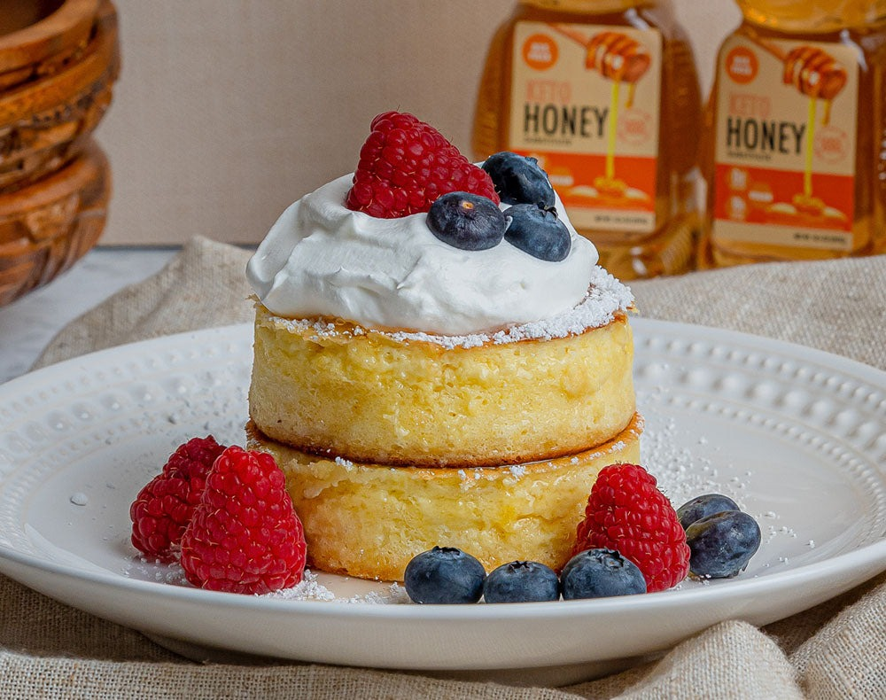

SOUFFLE PANCAKE

Description
These light-as-air pancakes, which were originally popularized in Japan,
are called “soufflé” pancakes because of their fluffy, cloud-like texture,
as well as the technique used to make them. As with soufflé, the egg
whites are whipped to create a meringue that aerates the batter, giving
these pancakes a much higher rise than their American-style counterparts.
With their buttery, eggy flavor and subtle sweetness, these soufflé
pancakes are perfect for topping with whipped cream and berries.
Ingredients
- 6 tablespoons salted butter
- 7 large eggs
- 1 ½ cups all-purpose flour
- 1 ½ cups milk
- 2 tablespoons white sugar
- 1 tablespoon lemon juice
- 1 teaspoon salt
- 1 teaspoon baking soda
- ½ teaspoon vanilla extract
- 5 fresh strawberries, sliced, or to taste
- 1 tablespoon confectioners' sugar, or to taste
Directions
- Set a rack in the middle of the oven and preheat to 350 degrees F (175 degrees C).
- Melt butter in a 12-inch oven-proof skillet over low heat, 3 to 5 minutes. Remove from heat.
- Separate eggs, placing egg whites in a large bowl and egg yolks in a medium bowl. Add flour, milk, sugar, lemon juice, salt, baking soda, and vanilla to the bowl of yolks. Add 3 tablespoons melted butter; lightly mix into a slightly lumpy batter. Let batter rest while whipping egg whites.
- Whisk egg whites into stiff peaks using a wire whisk or electric mixer. Gently fold batter into the egg whites.
- Return the skillet to medium-high heat. Pour in batter just before butter starts to brown. Cook until slightly set, 2 to 3 minutes. Drop in sliced strawberries until they are mostly submerged.
- Transfer the skillet to the oven. Bake soufflé until top is light brown and center is set and doesn't jiggle when shaken, about 25 minutes. Broil until top is dark brown in color, about 2 minutes.
- Slide pancake onto a plate and sprinkle confectioners' sugar on top.